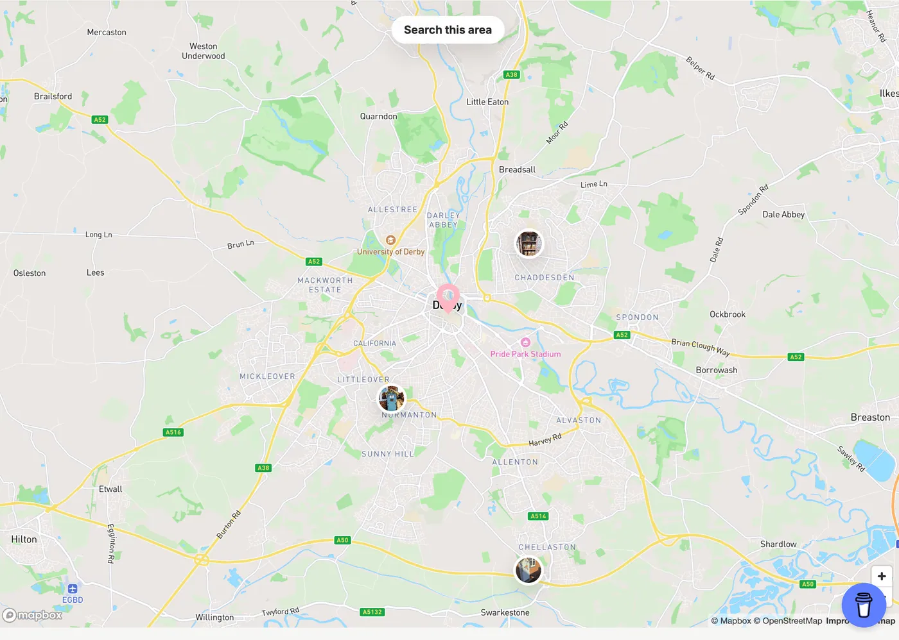
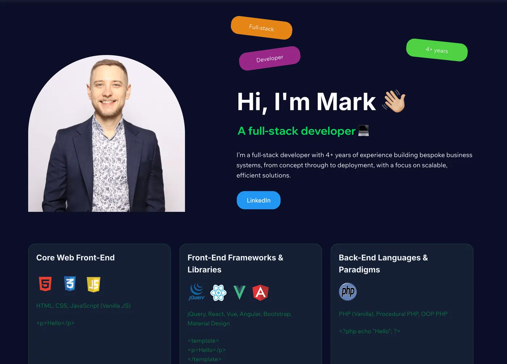
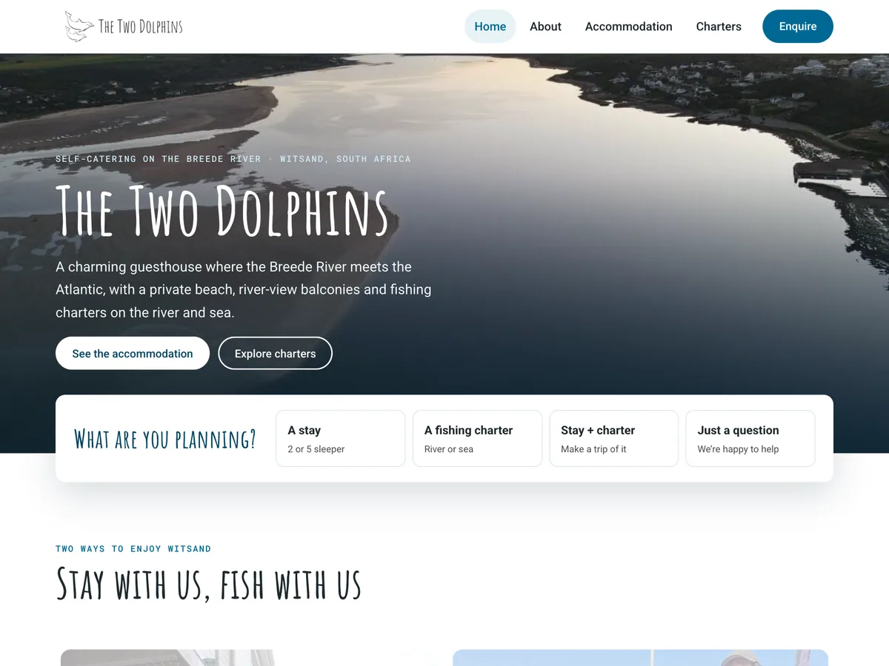
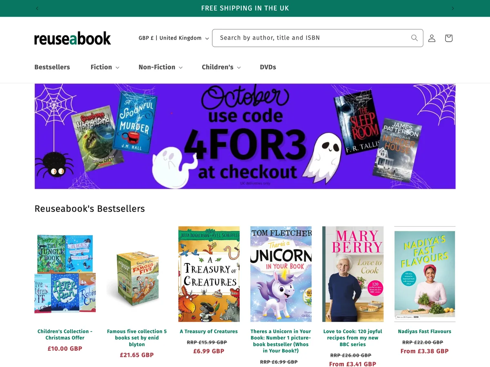
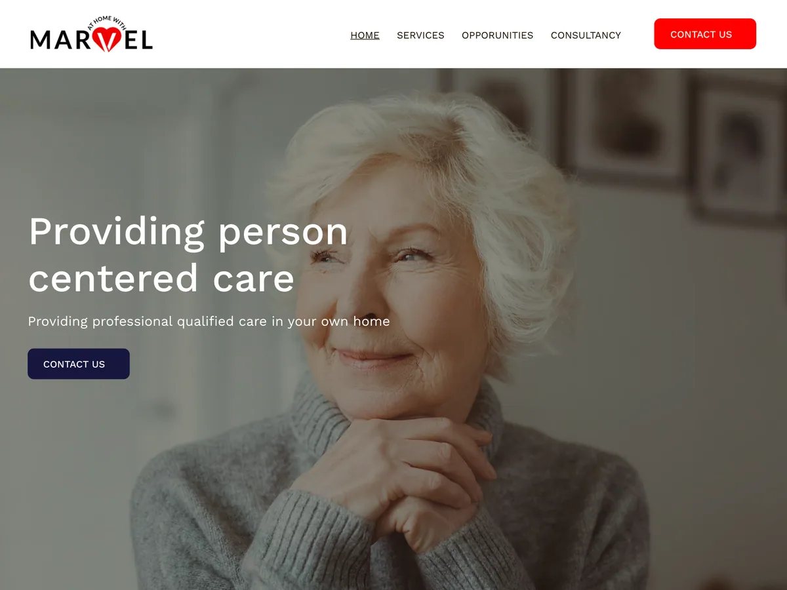

I turn research into products people use.
I’m a UX designer at Slimming World with a background in psychology and front‑end development. My group search redesign has driven 245% more group page visits since launch.
Selected work
-
Slimming World · Live since September 2026
Redesigning how people find a Slimming World group
I led the UX from research and workshops through usability testing to launch, across mobile web, app and desktop.
- Research
- UX design
- Usability testing
- +245% Group page visits
- +683% Town or city searches
-
Personal project
From search to booking: a seamless travel experience
Competitor research and a literature review on airline upselling, turned into a mobile booking journey with upsells that feel relevant.
- Research
- UX/UI design
- Prototyping
- 5 Competitor sites reviewed
- 5 Booking steps designed
-
Slimming World · Discovery
Exploring digital coaching for weight management
Should online members get AI-powered coaching? Support data, a cancellation survey and competitor apps, turned into a recommendation and concept wireframes.
- Discovery
- Data analysis
- UX design
- 3 weeks Discovery
- 4 Competitor apps analysed
-
Side project
Gym Tracker: a workout log designed for the middle of a set
I swapped my workout spreadsheet for an app of my own, designed with AI as a design partner. It tracks progressive overload and runs, and lives on my phone’s home screen.
- UX/UI design
- AI-assisted design
How I work
-
Psychology-led empathy
Understanding why people behave the way they do: motivation, habits and behaviour change, so designs support real needs.
-
Data-driven decisions
Surveys, support data, competitor and literature reviews: evidence first, then design, then test and iterate.
-
Design that ships
A front-end development background means designs that are realistic to build, and websites I've built myself.
Websites I've built
-

CakeSheds
Designing and developing the CakeSheds local finder.
- UX/UI design
-

Developer Portfolio
Designing and developing a single page portfolio website for a developer.
- UX/UI design
- Wix
-

The Two Dolphins
Designing and developing the website for a guesthouse in South Africa.
- UX/UI design
- Front-end dev
-

Reuseabook
Redesigning and developing an e-commerce platform for used books.
- Research
- Shopify
- Front-end dev
-

At Home with Marvel
Redesigning and developing a single page website for a care company.
- UX/UI design
- Wix